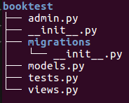
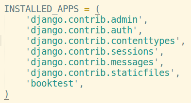
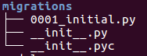
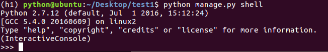

设计介绍
- 本示例完成“图书-英雄”信息的维护，需要存储两种数据：图书、英雄
- 图书表结构设计：
- 表名：BookInfo
- 图书名称：btitle
- 图书发布时间：bpub_date
- 英雄表结构设计：
- 表名：HeroInfo
- 英雄姓名：hname
- 英雄性别：hgender
- 英雄简介：hcontent
- 所属图书：hbook
- 图书-英雄的关系为一对多
数据库配置
- 在settings.py文件中，通过DATABASES项进行数据库设置
- django支持的数据库包括：sqlite、mysql等主流数据库
- Django默认使用SQLite数据库
创建应用
- 在一个项目中可以创建一到多个应用，每个应用进行一种业务处理
- 创建应用的命令：
python manage.py startapp booktest
- 应用的目录结构如下图

定义模型类
- 有一个数据表，就有一个模型类与之对应
- 打开models.py文件，定义模型类
- 引入包from django.db import models
- 模型类继承自models.Model类
- 说明：不需要定义主键列，在生成时会自动添加，并且值为自动增长
- 当输出对象时，会调用对象的str方法
from django.db import models
class BookInfo(models.Model):
btitle = models.CharField(max_length=20)
bpub_date = models.DateTimeField()
def _ _str_ _(self):
return "%d" % self.pk
class HeroInfo(models.Model):
hname = models.CharField(max_length=20)
hgender = models.BooleanField()
hcontent = models.CharField(max_length=100)
hBook = models.ForeignKey('BookInfo')
def _ _str_ _(self):
return "%d" % self.pk
生成数据表
- 激活模型：编辑settings.py文件，将booktest应用加入到installed_apps中

- 生成迁移文件：根据模型类生成sql语句
python manage.py makemigrations
- 迁移文件被生成到应用的migrations目录

- 执行迁移：执行sql语句生成数据表
python manage.py migrate
测试数据操作
- 进入python shell，进行简单的模型API练习
python manage.py shell
- 进入shell后提示如下：

- 引入需要的包：
from booktest.models import BookInfo,HeroInfo
from django.utils import timezone
from datetime import *
- 查询所有图书信息：
BookInfo.objects.all()
- 新建图书信息：
b = BookInfo()
b.btitle="射雕英雄传"
b.bpub_date=datetime(year=1990,month=1,day=10)
b.save()
- 查找图书信息：
b=BookInfo.objects.get(pk=1)
- 输出图书信息：
b
b.id
b.btitle
- 修改图书信息：
b.btitle=u"天龙八部"
b.save()
- 删除图书信息：
b.delete()
关联对象的操作
- 对于HeroInfo可以按照上面的操作方式进行
- 添加，注意添加关联对象
h=HeroInfo()
h.htitle=u'郭靖'
h.hgender=True
h.hcontent=u'降龙十八掌'
h.hBook=b
h.save()
- 获得关联集合：返回当前book对象的所有hero
b.heroinfo_set.all()
- 有一个HeroInfo存在，必须要有一个BookInfo对象，提供了创建关联的数据：
h=b.heroinfo_set.create(htitle=u'黄蓉',hgender=False,hcontent=u'打狗棍法')
h